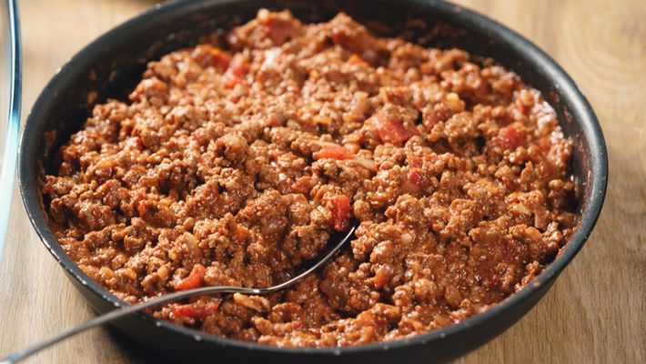

Carne moída

Descrição
Carne moída com pouca receita
Ingredientes
- 500 g de carne moída
- 1/2 cebola
- 2 colheres (sopa) de óleo
- 2 dentes de alho amassados
- 1 colher (sopa) rasa de extrato de tomate
- coentro a gosto
- 1 colher (sopa) rasa daqueles temperos completos que já vêm pronto
Como fazer
- Em uma panela coloque a carne com o óleo, 1 colher de tempero e o alho
- Misture bem e deixe descansar por 5 minutos.
- Em seguida bata no liquidificador a cebola e o coentro com 1/2 xícara de água.
- Depois despeje tudo na panela da carne junto com o extrato de tomate.
- Deixe cozinhar até pegar gosto e a carne ficar no ponto.